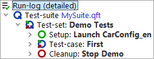

| Version 6.0.3 |
Finally let's execute our newly created suite:
The SUT is expected to appear, the test-case will be executed and finally the SUT will be terminated.
We know the test-run details can be looked up in the run-log.
|
|  | ||
|
| Figure 11.14: The Run-Log of the Test-suite | ||
In the first tutorial chapter we've already learned how to use the run-log for error analysis.
| Last update: 9/6/2022 Copyright © 2002-2022 Quality First Software GmbH |